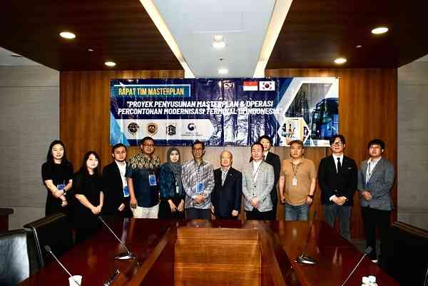
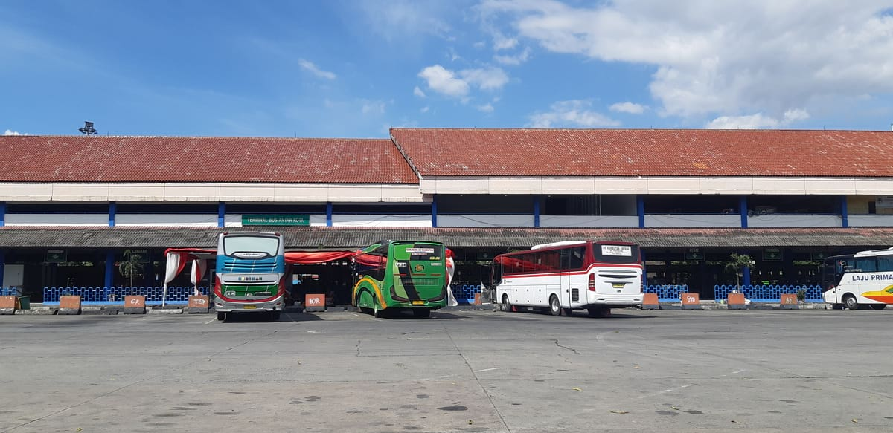
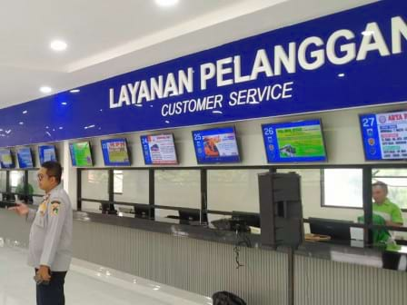
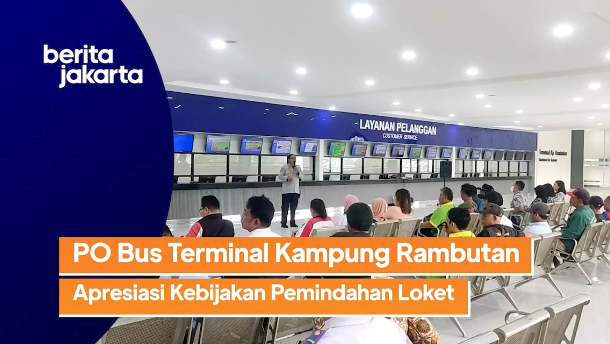
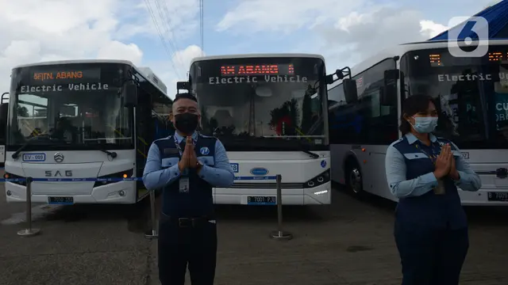
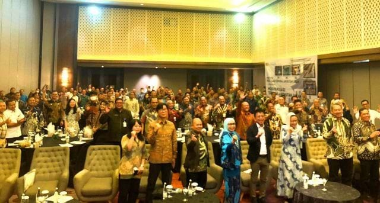

Media Report from NIA
Media Report
Judul + Isi
Samchully Networks, Menyelenggarakan Opening Ceremony untuk Proyek Modernisasi Terminal Bus
Haninpost
2023-09-18
Live Report: Keren!! Kini Terminal Kampung Rambutan Lebih Modern dengan Wajah Baru | Fokus
Indosiar
2023-09-14
Terminal Bus Kampung Rambutan Mulai Buka Penjualan Tiket Online
Berita Jakarta
2023-09-13
Terminal Bus Kampung Rambutan Bakal Jadi Percontohan Modernisasi
Berita Jakarta
2023-08-23
Samchully Networks, Sukses Menyelenggarakan Pelatihan undangan ke-2 di Korea bersama Kemenhub Indonesia
Daum.net
2023-07-27

Samchully Networks, Menyelenggarakan Seminar Masterplan Modernisasi Terminal Bus
News1
2023-07-27

Hibah Korea Selatan untuk Modernisasi Terminal Kampung Rambutan
Kompas
2023-04-14

31 Loket Bus AKAP di Terminal Kampung Rambutan Dipindah ke Lantai Dua
Berita Jakarta
2023-07-07

PO Bus Terminal Kampung Rambutan Apresiasi Kebijakan Pemindahan Loket
Berita Jakarta
2023-07-06
PT NIA dan Kemenhub Gelar Pelatihan Sistem Modernisasi Terminal
Tribun
2023-03-04

Lewat Modernisasi Terminal, Penumpang Tak Lagi Antre Pesan Tiket Bus
Liputan6
2023-03-09

Samchully Networks Memimpin Dalam Modernisasi Terminal Bus di Indonesia
Haninpost
2023-02-28
Mewakili Korea, PT NIA Laksanakan Proyek Modernisasi Terminal Bus
Kumparan
2022-11-23
Samchully Networks, mengundang Kemenhub ke Korea
Siminilbo
2022-11-22
2 Terminal Bus di RI Akan Dimodernisasi
Okezone
2022-11-21
Terminal Kampung Rambutan dan Leuwi Panjang akan Dimodernisasi
TVONE
2022-11-21
1
2
3